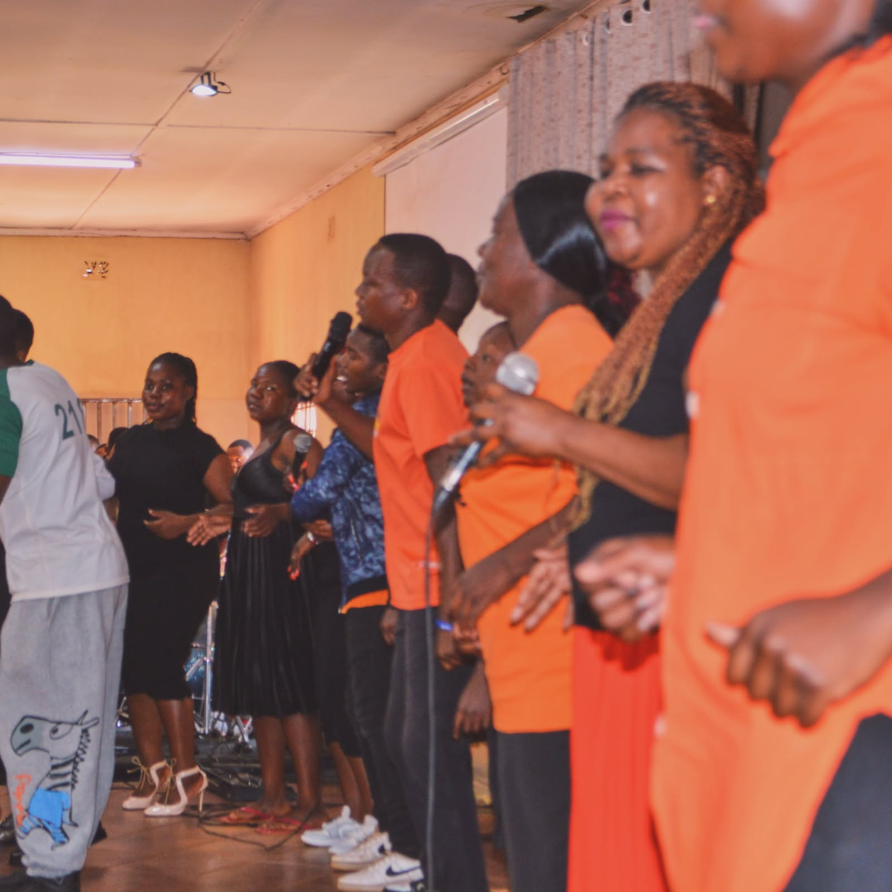

Year of Jubilee
Year of JubileeAdvancing to Possess
God has already given the promise; our part is to rise, step forward in faith and take possession.
Read the notes →From The Pulpit
Notes from our Sunday messages: the key scripture, the big idea, the main points, and questions to talk through in your cell group.
4 notes
Year of JubileeGod has already given the promise; our part is to rise, step forward in faith and take possession.
Read the notes → Family
FamilyChildren are not the church of tomorrow — they are disciples today, and the whole church shares in raising them.
Read the notes →
34 Years of GraceRemembering God's faithfulness in the past gives us confidence to trust Him with the future.
Read the notes →We grow best in the company of others — Christ makes disciples through people who walk with people.
Read the notes →No notes match your search.